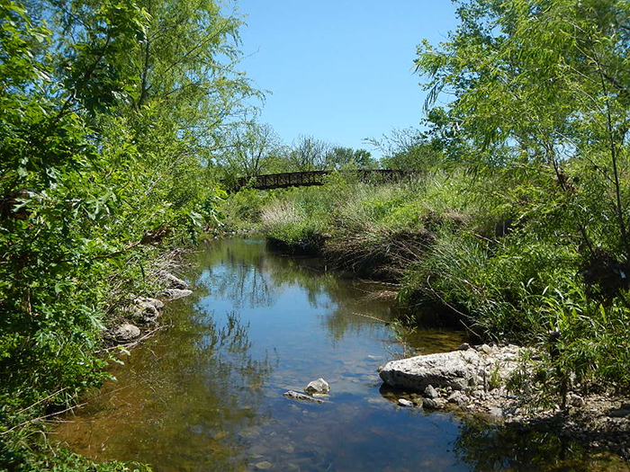

Why Go Ultralight Fishing?
Ultralight fishing is basically targetting smaller fish (less than 6 inches for the most part) in smaller bodies of water (creeks, streams) with very light tackle.
For me, when I'm having a lousy bass/catfish fishing experience, I'll drive to my favorite creek and have at it. I can almost always catch a mess of fish; most people aren't even aware fish exist in the "skinny" water I fish, much less care to catch them. Even though the fishies are usually small, I have a blast. The fish are aggressive and fight hard for their size, especially on a light rod, reel, and line.
Somedays instead of trying to catch the fish, I'll find insects and throw them on the water. As they struggle on the surface, fish will come and snap them up. It never gets old. I don't always have to catch fish to be amused; feeding them is just as fun.